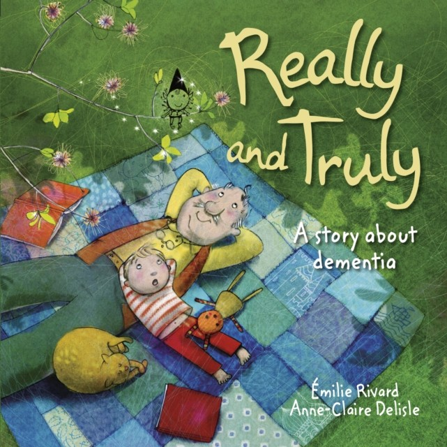

Really and Truly: A Story about Dementia
By Emile Rivard and Anne-Claire Deslisle
Grandpa slowly opens his mouth and says, "Who are you?"
Mum answers, "It's Charlie, your grandson".
He frowns down at me with his enormous eyebrows.
"I don't know anyone called Charlie," he says.
This sensitive picture book explores the relationship between Charlie and his grandfather, who has developed Alzheimer's and dementia. Charlie used to love his grandfather's stories, but now Grandpa has changed and he doesn't tell them anymore. Charlie still remembers the stories though, and he has a great idea - he can tell them back to Grandpa! And, just occasionally, he can make Grandpa smile...
This book is designed to give parents of children whose grandparent suffers from dementia a way into discussing the changes that are taking place, and how they might deal with them, without raising false hope. It also offers a moving insight into the loving relationship between grandparent and grandchild, which transcends the difficulties of this tragic disease, without focusing on too much background information about Alzheimer's, or other forms of dementia.
Age Range: 6 - 11 years
Find out more:
here